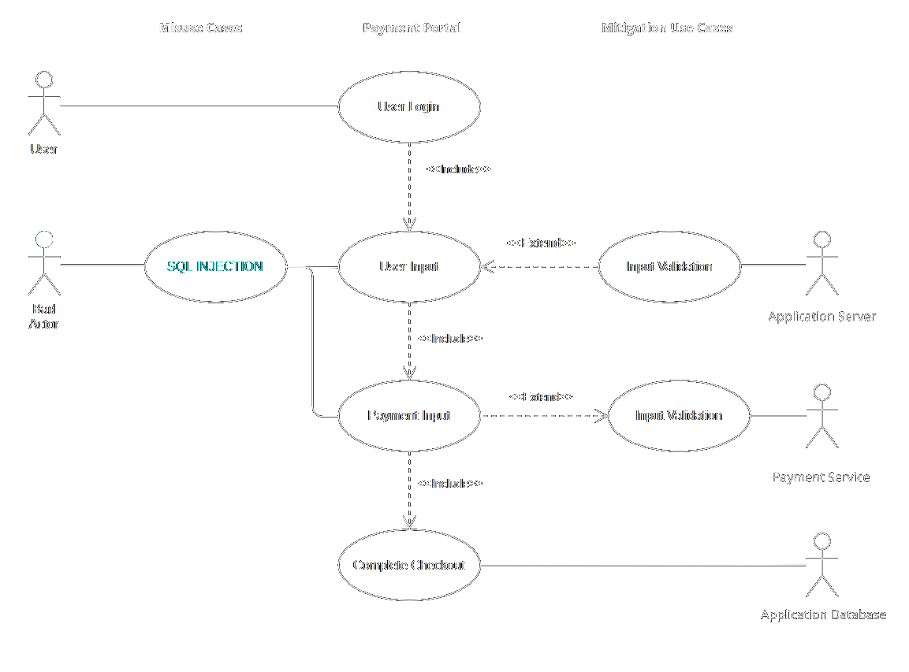

Welcome to my Secure Software Development module ePortfolio.
Below you will find reflections, assignments and information gathered from all units.
Unit 1
Reflections & Terminologies
Unit 1 introduces software development strategies such as waterfall and agile approaches. Both methodologies are different in terms of application in which the development workflow is unique. While waterflow methods indicates the development of each software component individually (isolated Phases) based on comprehensive planning, agile approaches require iterative cycles where each component can run in parallel (Thesing, et al., 2021). In my opinion, agile methods are more relevant today’s rapid market conditions. That is because adopting this method advocates a step-by-step solution and coordinates interim results in short cycles. One reason for this is that the client specifies generalized goals but cannot yet specify detailed requirements of the software. With a brief planning horizon, I think agile approaches allows for flexibility that is need in the initial project phases.
Team Notes
Following my introduction to the team members, we agreed to setup a workshop to draft the team contract and to setup a weekly progress meeting schedule. We had a brief chat on the design document topics and we have decided to upload gathered information to a shared drive to track our progress.
Discussion 1
According to OWASP, code injection is a security risk that allows attackers to breach and manipulated the database of a targeted system. 94% of tested web applications provide evidence of code injection instances of some sort and is considered one of the most common vulnerabilities (Anon. 2021). There are various types of code injection attacks in which hackers exploit application flaws where input validation is performed before the data is sent to the server. Therefore, one of the most common attacks is performed by executing malicious code on the application through dedicated user input fields (Plesky 2020). For this discussion, an instance of code injection attacks will be illustrated using a Use Case diagram that represents a payment portal of an e-commerce web application.
Use case diagrams can be designed to identify possible database breaches and prevention strategies. In this instance, the diagram illustrates the authentication of malicious SQL quires that can result in a data breach. Since SQL is frequently used in web applications to manage data structures, attackers can target crucial information and claim control of the database by accessing, modifying or removing sensitive information. This scenario explores the possibility of injecting SQL quires within user input parameters in which the attacker can gain access to sensitive payment information or users database.
There are many prevention techniques proposed by the OWSAP that protects against code injection attacks, one of which is Input Validation. This process aims to verify the types of input submitted by the user. Input Validation ensures that the accepted type of input is constrained in length, format and type (Anon. 2021). Once parameters are satisfied only then the input can be processed. The are various types of input validation strategies that include fixed input values, the use of parameterized queries, etc. Therefore, SQL injection flaws can be avoided by monitoring and validating user supplied input. Code injections is considered a major security threat to web applications. Identifying design flaws and possible attacks during systems design can help protect the system’s database.
All references are recorded in unit 12.
Unit 2
Reflections Artefacts, & Terminologies
Unit 2 reveals the importance of secure software development especially after participating in the collaborative discussion about the OWASP’s top 10 security threats. The global digitization of the most industries requires major attention to secure software development principles. As such, OWASP introduce several SE malpractices that can pose a threat to web applications in which common software breaches can take place. However, as discussed in the previous unit, agile project management allows the development of more efficient and secure SE process (Sharma & Bawa, 2022).
Team Notes
In my second meeting with team, we have voted for the Netherlands Cyber Security Crime Detection as our topic for this assignment. We have agreed to gather required information and to set-up an outline for the major software components that will dictate the direction of the app development.
Artefacts: Seminar Prep. Q2
Cybersecurity is a growing concern for individuals and organizations worldwide. While most attention is placed on external threats, it is crucial to recognize the significant role employees play in maintaining the integrity of their organization's systems. In fact, statistics suggest that insider threats account for nearly half of all cybersecurity incidents. Therefore, it is essential to manage people effectively to overcome cybersecurity attacks from the inside.
Authentication
First and foremost, employee training is critical in preventing insider threats. This training should include proper password management, recognizing phishing scams, and reporting suspicious behaviour (Budzak 2016). Employees should also be educated on the importance of protecting confidential information, such as client data, financial records, and intellectual property. Companies can also conduct regular simulations and assessments to ensure that employees understand and follow cybersecurity policies.
Access Control
Secondly, implementing access controls and permissions is essential in preventing insider attacks. By limiting access to specific information and systems, organizations can reduce the potential for data breaches. Access controls can also be used to monitor employee activity and detect suspicious behaviour. This monitoring should not be overly intrusive, and employees should be made aware that their actions may be monitored. Clear communication about access controls and permissions can help foster a culture of cybersecurity within the organization.
Corrective Action
Another crucial aspect of managing people to overcome cybersecurity attacks is creating a culture of accountability. Employees should be held responsible for their actions and informed of the consequences of violating cybersecurity policies. This accountability can be reinforced through performance evaluations and incentives for good cybersecurity practices. By emphasizing the importance of cybersecurity and holding employees accountable, organizations can create a culture of responsibility and reduce the risk of insider threats.
Information Security
Managing people effectively is crucial in overcoming cybersecurity attacks from the inside. By providing employee training, implementing access controls and permissions, creating a culture of accountability, and fostering open communication, organizations can reduce the risk of insider threats and maintain the integrity of their systems. It is vital to recognize that cybersecurity is a shared responsibility, and all employees must be informed and engaged in maintaining the security of their organization's systems.
All references are recorded in unit 12.
Unit 3
Reflections & Terminologies
In this unit, I was keen to explore the best practices to develop a secure software and the common design patterns to achieve this. Having developed a mini software during my last OOP module, I often found myself using the decorator design pattern. As a result, the code that was produced was more structured and flexible as it reduces the subclass count and leverages the abstract component to build the applications main system features. Moreover, there are other design patterns that are considered secure and are usually called “Secure Design Patterns” (SPD). SDP does not only promote reusability but also takes into consideration software vulnerabilities. This method replicates existing design patterns and adds security-effective techniques in order to protect the system form security breaches after deployment (Dougherty & Kirk , 2009).
Team Notes
In our third team meeting, each member presented their research on the system requirements of the software. We have decided to work on the document outline in an attempt to organize the structure of the application and our intended workflow. I think organizing the application into several components can assist with understanding the application’s general requirements. Therefore, we have decided the application should be divided into sections that include main system requirements, proposed security measures, main databases, UML Diagrams and development tools. In this way, the application components can be split among team members for further development.
Discussion(Team Activity)
What factors determine whether a programming language is secure or not?
There are many factors that indicate how secure a programming language is, according to …… some of these factors include:
Could Python be classed as a secure language? Justify your answer.
Referring to the factors above, Python has strong memory management features including automatic memory allocation and garbage collection. This makes it less prone to memory-related security vulnerabilities such as buffer overflows and memory leaks. python is a dynamically-typed language, which means that variables are not required to have a specific data type. However, Python has strong type safety features that help prevent type-related security vulnerabilities such as type confusion and pointer arithmetic errors.
Python would be a better language to create operating systems than C. Discuss.
While python is a high-level interpreted programming language and is mostly used for automation and data processing tasks, it is not suited for developing operating system for several reasons.
Discussion 1 Summery post
All references are recorded in unit 12.
Unit 4
Reflections & Terminologies
In unit 4, I was keen to understand the usage of regular expressions (Regex) and how it is a powerful tool that is used in text processing and identifying patterns. Regex can be particularly useful in providing a secure approach for validating input that can be greatly beneficial to our application implementation phase. On the other hand, I have learned that “evil regex” is referred overly complex regex patterns that can have unintended consequences such as the increase of the process time due to excessive backtracking. We are planning to use regex in our sign-up pages and building a pattern for each input category such as the email and submission ID.
Team Notes
Now that we are closer to the deadline, we have decided to setup a session to review each other’s system components and research materials. We also conducted few debates concerning the secure software features and GDPR clauses to be used. Meanwhile, we had to test several modules such as the login and signup features to help us understand and construct our UML diagrams.
Portfolio Component
What is ReDOS and what part do ‘Evil Regex’ play?
ReDoS stands for "Regular Expression Denial of Service," which refers to a type of cyber-attack that exploits the vulnerability of certain regular expressions to cause a denial of service (DoS) condition in the target application. Regular expressions are patterns used to match and manipulate strings, and they are commonly used in programming.
"Evil Regex" is a term used to describe malicious or intentionally crafted regular expressions that are designed to trigger the ReDoS vulnerability in regex engines. These malicious regular expressions are carefully crafted with certain patterns or combinations of characters that exploit the way the regex engine processes input, causing it to exhibit poor performance and take an excessive amount of time to complete the matching process.
What are the common problems associated with the use of regex? How can these be mitigated?
Performance and Efficiency: Some regex patterns can be inefficient and result in poor performance, especially when dealing with large input data or complex patterns. s, it's important to use optimized and efficient regex patterns. Avoid using overly complex or redundant patterns, and consider techniques such as pattern simplification, character class optimization, and quantifier optimization to optimize regex performance.
Security Risks: Regular expressions can potentially introduce security risks, such as ReDoS attacks, as mentioned in the previous answer. Malicious or poorly crafted regex patterns can be exploited to cause denial of service, information disclosure, or other security vulnerabilities in the target application. To mitigate security risks associated with regex, it's important to validate and sanitize any input that is used in regex patterns, and carefully review and test regex patterns for potential vulnerabilities, such as ReDoS.
How and why could regex be used as part of a security solution?
Input Validation: Regex can be used to validate and sanitize input data to ensure that it meets the expected format or pattern, which can help prevent injection attacks, such as SQL injection, cross-site scripting (XSS), or other types of code injection attacks.
Artefacts: UK postcode, Regex
UK post codes consists of two parts, an “outcode” and an “incode”. Each consists of two – four characters follower by a space, then another three characters. A regex pattern can be extracted from a post code if we comply with a basic rule. An outcode consists of 1-2 letters followed by a character that is aways numeric, followed by and optional letter or number. Example (AA1A / A1A/ AA11 etc). An incode is separated by a single or multiple space, followed by a numeric character, followed by 2 letters. This regex pattern also limits the length of the input to match the UK post code format, thus protecting for ReDos. Check the code below.
import re
def validate_uk_postcode(user_input):
"""A function to validate user post codes inputs using regex match function"""
return bool(re.match(r"^(((([A-Z][A-Z]{0,1})[0-9][A-Z0-9]{0,1}) {0,}[0-9])[A-Z]{2})$", user_input))
test_codes = ["M1 1AA", "M60 1NW", "CR2 6XH", "DN55 1PT", "W1A 1HQ", "EC1A 1BB", "12312asda"]
for user_input in test_codes:
print(validate_uk_postcode(user_input))
Unit 5
Reflections & Terminologies
This unit explores the various testing modules offered by python such as pylint, unitest and flack8. I think this unit provides a clear approach on the testing strategies, especially during the codio exercise. I have learned how to import the testing scripts to my main file and incorporate testing models for each of my code block that presents different system features.
Team Notes
During this meeting, the following work in progress topics were discussed:
The above points assisted us with identifying the required tools to build our application. That is because our design proposal will cover the processes and frameworks needed to execute the web app.
Portfolio Component: Cyclomatic Complexity
Cyclomatic Complexity in my opinion is still reelevated when it comes to developing a secure software. Cyclomatic Complexity is a quantitative measure of the complexity of a software program's control flow, and it can be used as an indicator of the potential risk and maintainability of the code. Higher CC values can indicate the likelihood od in introducing security vulnerabilities. Although CC is just one of many factors to consider in developing a secure software, it provides an overall matric of the level complexity of the code in which few initiatives can be taken to refactor the code and the value of test cases.
Artefacts: Testing
The unit test module in python is imported to conduct a test case on our previous regex syntax that validates the UK post codes. In the previous code, the built-in test in a from of a “for loop” was added to validate the user input. For the unit test to succeed, the built-in tester will be removed. A class will be created to test the validation function in the post code checker file. Several assert functions will evaluate if the post code is True. See the code below:
import unittest
import Unit4_Regex
class PostCodeTester(unittest.TestCase):
def test_Unit4_Regex(self):
self.assertEqual(Unit4_Regex.validate_uk_postcode("M1 1AA"), True)
self.assertEqual(Unit4_Regex.validate_uk_postcode("M60 1NW"), True)
self.assertEqual(Unit4_Regex.validate_uk_postcode("CR2 6XH"), True)
self.assertEqual(Unit4_Regex.validate_uk_postcode("23123123s"), True)
if __name__ == '__main__':
unittest.main()
Results
Ran 1 test in 0.018s
FAILED (failures=1)
Launching unittests with arguments python -m unittest test_postcodes.PostCodeTester.test_Unit4_Regex in F:\01_Documents\01_My_Academics\03_Essex University\03_04_NISM_SSD\04_Eportfolio\Codes
True != False
Expected :False
Actual :True
All references are recorded in unit 12.
Unit 6
Reflections & Terminologies
This unit was somehow and extension of the testing and debugging topics of the previous unit. I have continued to experiment with python built in testing libraries and linters that improves my code quality and structure. Since this week was the due date of our design document for the cyber security application, we have began testing out log-in and sign-up features of our software using these strategies.
Team Notes
This week was the due date for the design proposal. We conducted a series of workshops over the weekend beforehand to reorganize the structure of the design document. We previously planned that Richard and Charles will be in charge of the required database integration methods as well as the UML diagrams meanwhile Elise and myself prepared the secure software design tools and methodologies. Finally, we collectively proof read each other’s parts to ensure the clarity of the design proposal. We have also conducted several tests on the login and sign-up prototype which had the OTP integration and made sure that it followed the same logic as the UML diagrams that are presented.
Portfolio Component
The following code in stylelint.py file contained few errors that prevented it from running properly. In the view version, Indentation was added along with a print statement in order for the code be executed properly.
After running the flake8 module on the original code, the missing indentation error was returned in which the white spaces was viewed. In this case all the errors are viewed and amended.
Unit 7
Reflections & Terminologies
During this week, I explored the history and development of a typical operating systems and how an OS acts as the intermediary between computer hardware and software applications. It was also interesting to understand the common types of operating systems that are general-purposed and specific specialized environments. Furthermore, I have learned about the common measures to ensure the security of an operating system that includes limiting user preferences, use of strong authentication and monitoring the system.
Team Notes
This week’s meeting was challenging as we discussed the main framework where the web application would be built on. During our workshop we went through the blueprints for both Django and Flask. Since most of the team members were not familiar with Django framework, we have decided that Flask will the main farmwork as it is easy to understand and is prone to fewer errors and bugs. We have decided that I will be tasked with building the main interface, setting up the main HTML pages, CSS, Jscript as well as the client and server connections. Meanwhile Elsie will be responsible for creating the syntax for the log-in and sign-up module which will later be integrated with the main flask application. Richard and Charles will be tasked with building databases on MySQL and setting the connection protocol to the backend on my side.
Portfolio Component
In computer Science, Ontology is referred to as an explicit specification of an abstract model. In ____’s article, an Ontology Web Service language for example, aims to provide a catalogue for the development phase or any type of implementation technology that can assist an organization with getting up to speed with the right technology. However, OWS is an Ontology that is specific for the web domain. In other words, an Ontology of web services for instance, can be described as a formal knowledge or a set of concepts that provides the building blocks of Semantic Web Technology.
Artefacts
A command shell that implements the following commands will be created with python. Please review the code here.
Unit 8
Reflections Artefacts & Terminologies
Cryptography was one of the most challenging topics to grasp. However, during this unit, I was able to understand by practicing encryption techniques first hand during the base69 algorithm codio session. I also explored several python modules that encodes and decodes inputted user data using the cryptography.fernet and testing the output of the encrypted text. Since I mostly understand the process of encryption using this function, we are planning to use this technique in our web application to encrypt the user data before sending it to the database.
Discussion 2
Artefacts
A simple encryption program is created using a the fernet algorithm module. The user will input a text to that will be encrypted then decrypted in the terminal window. The functions will use the encode_text() and decode_text() objects provided by fernet. Please review the code here.
Unit 9
Team Notes
As we approach the deadline, we setup a series of mini workshops to begin testing our code. First, I had to present the logic behind the HTML that was created to familiarize the team members with the Jinga syntax that connects the html with the python code. Second, we have discussed the front end of the web application, how the users will access the login-page and view the current vulnerabilities pages. This workshop also aims to ensure that all team members have the required Flask packages installed on their system and that the main.py file is connected to Richard’s and Charles databases.
Unit 8
Reflections & Terminologies
Cryptography was one of the most challenging topics to grasp. However, during this unit, I was able to understand by practicing encryption techniques first hand during the base69 algorithm codio session. I also explored several python modules that encodes and decodes inputted user data using the cryptography.fernet and testing the output of the encrypted text. Since I mostly understand the process of encryption using this function, we are planning to use this technique in our web application to encrypt the user data before sending it to the database.
Discussion 2
Artefacts
A simple encryption program is created using a the fernet algorithm module. The user will input a text to that will be encrypted then decrypted in the terminal window. The functions will use the encode_text() and decode_text() objects provided by fernet. Please review the code here.
Unit 9
Team Notes
As we approach the deadline, we setup a series of mini workshops to begin testing our code. First, I had to present the logic behind the HTML that was created to familiarize the team members with the Jinga syntax that connects the html with the python code. Second, we have discussed the front end of the web application, how the users will access the login-page and view the current vulnerabilities pages. This workshop also aims to ensure that all team members have the required Flask packages installed on their system and that the main.py file is connected to Richard’s and Charles databases.
Unit 10
Team Notes
We have conducted many meetings during this week mainly to ensure that Elise’s login and sign-up features are working. We had to test if the user input is recorded, encrypted and sent to the database. There were other challenges that we faced trying to integrate the pyOTP module and the QR code generation to authenticate the user. We tried to work on the popup window that generates the QR code and OTP for authenticating the user. On the other hand, Richard was working to connect his database of current vulnerabilities to the HTML webpage while Charles worked on the admin page that contained the system log information and the registered users tables. We aim to constantly update and debug the main.py file with the new code blocks from each team member.
Portfolio Component
According to Schmitz et al (2016), public and private are two types of faceted data. Failing to ensure secure flow of information may result in a data leakage in both data types. Therefore, faceted values that are assigned to data types protects unauthorised viewers from observing it. Thus, I think it is good practice to protect systems from data leakage, specifically private data. Although this approached contributes to the increased complexity of the code, Schmitz et al (2016) introduces the process of integrating faceted language as a library rather than modifying the actual code.